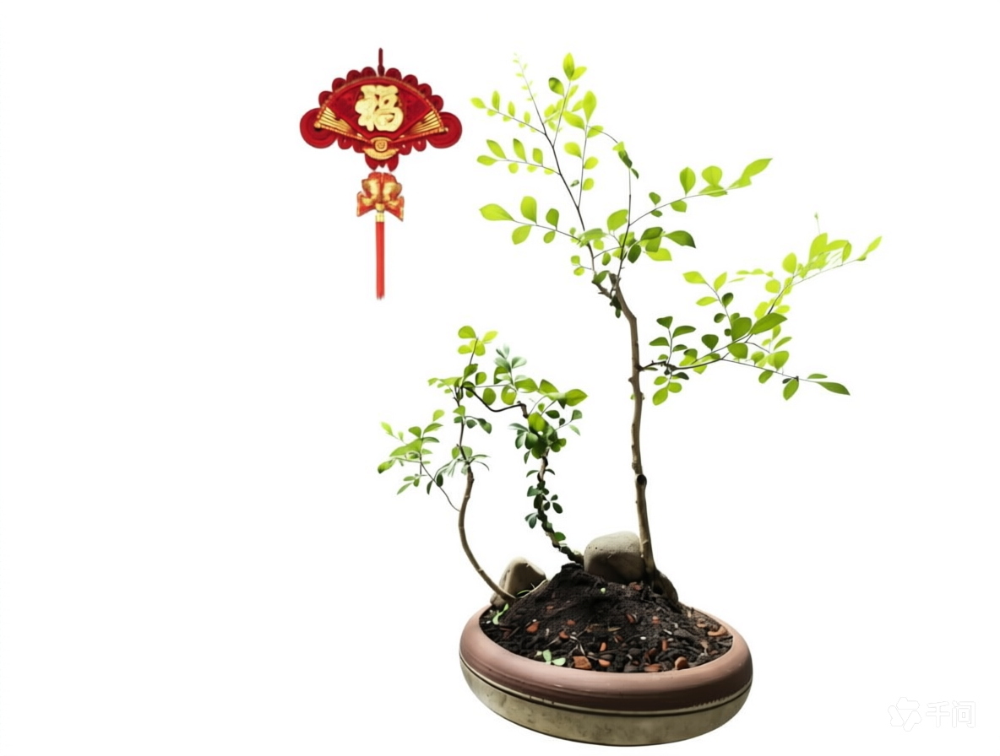

这里记录我做的盆景。点开每一株，能看到它的原样、成品、背部和制作过程，以及怎么养。

封面照片assets/images/jiulixiang/cover.png
九里香
Murraya paniculata
芸香科九里香属，花香远播、叶小枝密，岭南盆景最经典的树种之一。耐修剪、成型快，从原样到成景的全过程都在这里。
查看详情 →下一株？
把照片放进 assets/images/ 里的新文件夹，再复制一份 jiulixiang.html 改改文字，然后在首页照样子加一张卡片就行。